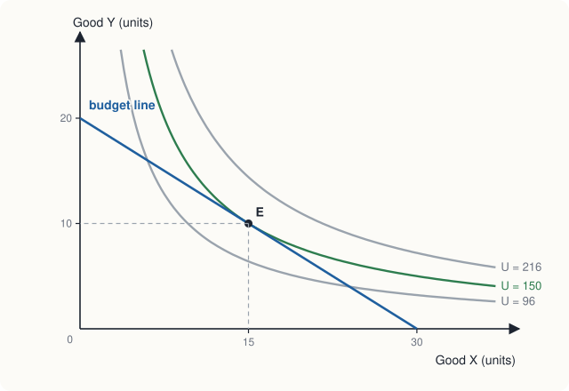
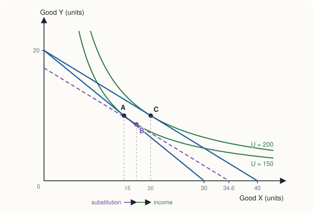

Chapter 6: Indifference Curves and Budget Constraints¶
The modern theory of consumer choice, and the income and substitution effects
Learning outcomes
After studying this chapter you should be able to:
- Draw indifference curves and explain their four properties.
- Define and calculate the marginal rate of substitution, and explain why it usually diminishes.
- Draw a budget line, find its intercepts and slope, and show how it moves when income or prices change.
- Find the consumer's best bundle as the tangency of an indifference curve and the budget line, both graphically and with a simple utility function.
- Derive an Engel curve and a demand curve from changes in income and price.
- Split the effect of a price change into a substitution effect and an income effect, and use them to distinguish normal, inferior and Giffen goods.
6.1 Indifference curves¶
Chapter 5 ended with the observation that consumer choice needs only a ranking of bundles. This chapter builds the theory on that basis. We keep to two goods, X and Y, so that everything can be drawn; the conclusions extend to any number of goods.
An indifference curve joins all the bundles of X and Y that give the consumer the same level of satisfaction. She is indifferent between any two points on the same curve. Table 6.1 lists some bundles between which a consumer, Nisha, is indifferent.
| Bundle | Good X | Good Y |
|---|---|---|
| A | 5 | 30 |
| B | 10 | 15 |
| C | 15 | 10 |
| D | 25 | 6 |
| E | 30 | 5 |
Table 6.1. Bundles that Nisha likes equally well.
Plotted with X on the horizontal axis and Y on the vertical axis, these points lie on one indifference curve. A collection of indifference curves, one for each level of satisfaction, is called an indifference map.
Properties of indifference curves¶
Given the assumptions about preferences in Chapter 5, indifference curves have four properties.
- They slope downwards. Because more is better, if a bundle has more X it must have less Y to leave the consumer equally well off. A curve sloping upwards would join a bundle to another with more of both goods, which she would prefer.
- Curves further from the origin represent higher satisfaction. A curve further out contains bundles with more of both goods than some bundles on a curve further in.
- They do not cross. Suppose two curves crossed at a bundle A. Take a bundle B on one curve and C on the other, with C containing more of both goods than B. The consumer is indifferent between A and B (same curve) and between A and C (same curve), so by transitivity between B and C. But C has more of both goods, so she must prefer C. This contradiction shows the curves cannot cross.
- They are usually convex to the origin (bowed inwards). This reflects a diminishing marginal rate of substitution, explained next.
6.2 The marginal rate of substitution¶
The marginal rate of substitution (MRS) of X for Y is the amount of Y that the consumer is willing to give up to get one more unit of X, while staying equally well off. It is the absolute value of the slope of the indifference curve:
From Table 6.1:
| Move | Change in X | Change in Y | MRS (Y given up per unit of X) |
|---|---|---|---|
| A to B | +5 | −15 | 3.0 |
| B to C | +5 | −5 | 1.0 |
| C to D | +10 | −4 | 0.4 |
| D to E | +5 | −1 | 0.2 |
Table 6.2. Nisha's marginal rate of substitution falls as she has more X.
When Nisha has little X and much Y (bundle A), she would give up 3 units of Y for one more X. When she has much X and little Y (bundle D), she would give up only 0.2 units of Y. This is the diminishing marginal rate of substitution: the more of a good a consumer has, the less of the other good she will give up to get still more of it. It is why indifference curves are bowed towards the origin: steep where X is scarce, flat where X is plentiful. Consumers generally prefer balanced bundles to extreme ones.
MRS and marginal utilities¶
If we do use utility numbers, the MRS has a simple meaning. Moving along an indifference curve, the utility lost by giving up \(\Delta Y\) must equal the utility gained from \(\Delta X\): \(MU_Y \times |\Delta Y| = MU_X \times \Delta X\). Rearranging,
The bundles of Table 6.1 all give \(X \times Y = 150\). They lie on an indifference curve of the utility function \(U = XY\), for which \(MU_X = Y\) and \(MU_Y = X\), so \(MRS = Y/X\). At bundle C, \(MRS = 10/15 = 0.67\): in this small neighbourhood Nisha would give up about two-thirds of a unit of Y for one more X. (The figures in Table 6.2 are averages over larger steps.)
Two special cases¶
- Perfect substitutes. If two goods are interchangeable at a fixed rate, such as two brands of identical bottled water, the MRS is constant and indifference curves are straight lines.
- Perfect complements. If two goods are only useful together in fixed proportions, such as left and right shoes, an extra unit of one without the other adds nothing. Indifference curves are L-shaped, with the corner where the goods are in the right proportion.
Most pairs of goods lie between these extremes, with smoothly curved indifference curves.
6.3 The budget constraint¶
Preferences say what the consumer would like; the budget constraint says what she can afford. With income \(M\) and prices \(P_X\) and \(P_Y\), she can buy any bundle with
The bundles that use the whole income lie on the budget line \(P_X X + P_Y Y = M\).
Suppose Nisha has ₹120 to spend, X costs ₹4 and Y costs ₹6. Her budget line is \(4X + 6Y = 120\).
- If she spends everything on X, she gets \(120/4 = 30\) units: the horizontal intercept is \(M/P_X = 30\).
- If she spends everything on Y, she gets \(120/6 = 20\) units: the vertical intercept is \(M/P_Y = 20\).
- The slope of the line is \(-P_X/P_Y = -4/6 = -2/3\). To get one more unit of X she must give up two-thirds of a unit of Y. The ratio \(P_X/P_Y\) is the relative price of X: the rate at which the market lets her exchange Y for X.
Bundles on or inside the line are affordable; bundles outside are not.
Changes in income and prices¶
- A rise in income shifts the budget line outwards, parallel to itself. Both intercepts rise in proportion and the slope (relative price) is unchanged. With \(M = 180\), the intercepts become 45 and 30.
- A fall in the price of X makes the line pivot outwards around the vertical intercept. The consumer can buy more X with all her income, but no more Y. If \(P_X\) falls to ₹3, the horizontal intercept rises to 40, the vertical intercept stays at 20, and the slope becomes \(-3/6 = -1/2\).
- Doubling all prices and income together leaves the budget line exactly where it was. Only relative prices and real income matter.
6.4 The consumer's optimum¶
Put the indifference map and the budget line together. The consumer wants to reach the highest indifference curve she can, given her budget line. The best bundle is the point where the budget line just touches an indifference curve without crossing it: a point of tangency.

In Figure 6.1, the curve \(U = 96\) cuts the budget line in two places: Nisha can afford bundles on it, but she can do better by moving along the line towards E. The curve \(U = 216\) lies wholly outside the budget line: she cannot afford any bundle on it. The curve \(U = 150\) touches the line at E, so E is the best affordable bundle.
At the tangency, the slope of the indifference curve equals the slope of the budget line:
The left side is the rate at which Nisha is willing to exchange Y for X; the right side is the rate at which the market allows her to. If they differ, she can gain by trading. Suppose \(MRS = 2\) while \(P_X/P_Y = 2/3\): she would give up 2 units of Y for one more X, but the market asks only two-thirds of a unit. She should buy more X and less Y, moving down the budget line, until the MRS has fallen to equal the price ratio.
Since \(MRS = MU_X/MU_Y\), the tangency condition can be written
which is exactly the equimarginal principle of Chapter 5. The two approaches agree, but the indifference-curve approach needs only the ranking of bundles.
Example 6.1 Finding the optimum with a utility function
Nisha's preferences can be represented by \(U = XY\). Her income is ₹120, \(P_X = 4\) and \(P_Y = 6\). Find her best bundle.
Solution. For \(U = XY\), \(MRS = Y/X\). The tangency condition is
Substitute into the budget line: \(4X + 6\left(\tfrac{2}{3}X\right) = 120\), so \(8X = 120\) and \(X = 15\). Then \(Y = 10\). She spends \(4 \times 15 = 60\) rupees on X and \(6 \times 10 = 60\) rupees on Y, and reaches \(U = 150\), as in Figure 6.1.
Notice that she spends exactly half her income on each good. This is a property of \(U = XY\): for any income and prices, \(X = M/(2P_X)\) and \(Y = M/(2P_Y)\).
Corner solutions
Sometimes the best bundle contains none of one good: the highest indifference curve the consumer can reach touches the budget line at an intercept. A person who does not drink coffee buys none, whatever its price. The tangency condition then does not hold with equality; instead, at the corner, the MRS is less than the price ratio, so even the first unit of the good is not worth its price to her.
6.5 How the optimum responds to income¶
If income rises and prices stay the same, the budget line shifts out in parallel and the consumer moves to a new tangency on a higher indifference curve. Joining the optimal bundles for different incomes gives the income-consumption curve.
With \(U = XY\) and \(P_X = 4\), \(P_Y = 6\):
| Income (₹) | X bought | Y bought |
|---|---|---|
| 60 | 7.5 | 5 |
| 120 | 15 | 10 |
| 180 | 22.5 | 15 |
| 240 | 30 | 20 |
Table 6.3. Nisha's purchases at different incomes.
The relationship between income and the quantity bought of a good, at fixed prices, is called an Engel curve (after the statistician Ernst Engel). Here both goods are normal: more income, more of each. For an inferior good, the income-consumption curve bends back, and a rise in income leads the consumer to buy less of it.
6.6 How the optimum responds to price: the demand curve¶
If the price of X changes while income and the price of Y stay the same, the budget line pivots and the consumer moves to a new tangency. The curve joining these optimal bundles is the price-consumption curve, and the relationship between the price of X and the quantity of X bought is the consumer's demand curve for X.
With \(U = XY\) and \(M = 120\), the demand for X is \(X = 60/P_X\):
| Price of X (₹) | 6 | 4 | 3 | 2 |
|---|---|---|---|---|
| Quantity of X | 10 | 15 | 20 | 30 |
Table 6.4. Nisha's demand for X, derived from her indifference curves.
The demand curve slopes down, as the law of demand says. But indifference curves can tell us more: they can show why, by splitting the effect of the price change into two parts.
6.7 Income and substitution effects¶
When the price of X falls from ₹4 to ₹3, Nisha's purchases of X rise from 15 to 20. Two things have happened at once.
- X has become cheaper relative to Y. Even if she were no better off, she would substitute X for Y. This is the substitution effect.
- Her income buys more than before: her real income, or purchasing power, has risen. With more real income she changes her purchases, as in Section 6.5. This is the income effect.
To separate them, imagine that at the same time as the price falls, we take away just enough income to leave Nisha on her original indifference curve. The change in her purchases in this imaginary situation is the pure substitution effect; giving the income back produces the income effect. This way of dividing the change is due to John Hicks.
Example 6.2 Measuring the two effects
Nisha has \(U = XY\), \(M = 120\) and \(P_Y = 6\). The price of X falls from ₹4 to ₹3. Find the substitution and income effects on her purchases of X.
Solution.
Original bundle A. From Example 6.1, \(X = 15\), \(Y = 10\), \(U = 150\).
Final bundle C. At \(P_X = 3\): \(X = 120/(2 \times 3) = 20\) and \(Y = 120/(2 \times 6) = 10\), giving \(U = 200\).
Compensated bundle B. Find the cheapest way to reach \(U = 150\) at the new prices. Tangency requires \(Y/X = 3/6\), so \(Y = X/2\). On the original indifference curve, \(XY = 150\), so \(X \cdot X/2 = 150\), \(X^2 = 300\) and \(X = 17.32\), \(Y = 8.66\). This bundle costs \(3(17.32) + 6(8.66) = 103.92\) rupees; taking away \(120 - 103.92 = 16.08\) rupees of income would keep Nisha exactly as well off as before.
| Effect | Move | Change in X |
|---|---|---|
| Substitution effect | A (15) to B (17.32) | +2.32 |
| Income effect | B (17.32) to C (20) | +2.68 |
| Total effect | A (15) to C (20) | +5.00 |

Normal, inferior and Giffen goods¶
The substitution effect of a price fall is always to buy more of the good that has become cheaper. Along a convex indifference curve, a flatter budget line always touches it further to the right. This is the solid foundation of the law of demand.
The income effect depends on the kind of good.
- For a normal good, the income effect works in the same direction as the substitution effect: a price fall raises real income, and more income means more of the good. Both effects increase the quantity demanded, so the demand curve certainly slopes down. Nisha's X is normal.
- For an inferior good, the income effect works against the substitution effect: the rise in real income leads her to buy less. Usually the substitution effect is the larger, so the quantity demanded still rises when the price falls, and the demand curve still slopes down, though less steeply than it otherwise would.
- In principle, for a strongly inferior good that takes a large part of the budget, the income effect could outweigh the substitution effect. Then a fall in price would reduce the quantity demanded, and the demand curve would slope upwards. Such a good is called a Giffen good. The classic story is of very poor households for whom a cheap staple food takes most of their income: when its price rises, they can no longer afford the small amounts of better food they used to buy, and they buy more of the staple to fill the gap. Giffen goods are a theoretical possibility that is very rare in practice; some careful studies of very poor households have found evidence of it for staple foods.
| Type of good | Substitution effect of a price fall | Income effect of a price fall | Demand curve |
|---|---|---|---|
| Normal | buy more | buy more | slopes down |
| Inferior (ordinary) | buy more | buy less, but smaller | slopes down |
| Giffen | buy more | buy less, and larger | slopes up |
Table 6.5. Income and substitution effects for three types of good.
Common mistake
Every Giffen good is inferior, but very few inferior goods are Giffen goods. Do not call a good "Giffen" just because demand for it falls when income rises; that only makes it inferior.
Key idea
A price change has two effects. The substitution effect always moves the consumer towards the good that has become relatively cheaper. The income effect moves her towards more of normal goods and less of inferior goods as her real income rises. The law of demand holds for all normal goods and almost all inferior goods.
6.8 Summary¶
- An indifference curve joins bundles that give equal satisfaction. Indifference curves slope down, do not cross, represent more satisfaction further from the origin, and are usually convex.
- The marginal rate of substitution is the amount of Y the consumer will give up for one more X; it equals \(MU_X/MU_Y\) and usually diminishes along a curve.
- The budget line \(P_X X + P_Y Y = M\) has intercepts \(M/P_X\) and \(M/P_Y\) and slope \(-P_X/P_Y\). Income changes shift it in parallel; price changes pivot it.
- The consumer's optimum is the tangency of the budget line and the highest attainable indifference curve, where \(MRS = P_X/P_Y\), equivalent to \(MU_X/P_X = MU_Y/P_Y\).
- Changing income traces the income-consumption curve and the Engel curve; changing a price traces the price-consumption curve and the demand curve.
- A price change has a substitution effect (always towards the cheaper good) and an income effect (depending on whether the good is normal or inferior). A Giffen good is an inferior good whose income effect outweighs its substitution effect, so its demand curve slopes upwards.
6.9 Exercises¶
Exercise 1
A consumer has ₹300 to spend on X at ₹10 each and Y at ₹15 each. Write her budget line, find its intercepts and slope, and say whether the bundle (15, 12) is affordable.
Answer
Budget line: \(10X + 15Y = 300\). Intercepts: \(X = 30\), \(Y = 20\). Slope: \(-10/15 = -2/3\). The bundle (15, 12) costs \(150 + 180 = 330\) rupees, more than ₹300, so it is not affordable.
Exercise 2
In Exercise 1, the price of Y falls to ₹10. Describe how the budget line moves.
Answer
It pivots outwards around the X-intercept, which stays at 30. The Y-intercept rises from 20 to 30, and the slope becomes \(-10/10 = -1\).
Exercise 3
A consumer with \(U = XY\) has an income of ₹200, \(P_X = 5\) and \(P_Y = 10\). Find her best bundle and her utility.
Answer
She spends half her income on each good: \(X = 100/5 =\) 20, \(Y = 100/10 =\) 10. Check: \(MRS = Y/X = 0.5 = P_X/P_Y\). Utility \(= 200\).
Exercise 4
Explain why two indifference curves of the same consumer cannot cross.
Answer
If they crossed at bundle A, the consumer would be indifferent between A and every bundle on both curves, and so, by transitivity, between a bundle B on one curve and a bundle C on the other that contains more of both goods than B. But more is better implies she prefers C to B. The contradiction shows the curves cannot cross.
Exercise 5
At a consumer's current bundle, her MRS is 3 and the price ratio \(P_X/P_Y\) is 2. Is she at her optimum? Which way should she move along her budget line?
Answer
No. She values one more X at 3 units of Y, but the market charges only 2. She should buy more X and less Y. As she does, her MRS falls until it equals 2.
Exercise 6
The price of a good falls. The substitution effect raises the quantity demanded by 8 units and the income effect reduces it by 3 units. Is the good normal, inferior or Giffen? What is the total effect?
Answer
The income effect works against the substitution effect, so the good is inferior. The substitution effect is larger, so it is not Giffen. Total effect: \(8 - 3 =\) +5 units.
Exercise 7
Draw the indifference curves of a person who always takes exactly two spoons of sugar with each cup of tea. Where will she choose to be on any budget line?
Answer
Tea and sugar are perfect complements for her: indifference curves are L-shaped, with corners on the ray where sugar = 2 × tea. Extra tea without sugar, or extra sugar without tea, adds nothing. On any budget line she chooses the bundle where the line crosses that ray, so that she buys sugar and tea in the ratio 2 : 1.
6.10 Quiz¶
Check your understanding of Chapter 6
Exercise 1
Indifference curves are usually convex to the origin because
- more is better
- the marginal rate of substitution diminishes
- prices are fixed
- income is limited
Answer
the marginal rate of substitution diminishes
Exercise 2
Income is ₹500, the price of X is ₹25 and the price of Y is ₹20. What is the horizontal (X) intercept of the budget line?
Answer
20
Exercise 3
A rise in income, with prices unchanged,
- pivots the budget line
- shifts the budget line outwards in parallel
- changes the slope of the budget line
- leaves the budget line unchanged
Answer
shifts the budget line outwards in parallel
Exercise 4
At the consumer's optimum (an interior solution),
- the MRS equals the ratio of the prices
- the MRS equals one
- the consumer spends equal amounts on both goods
- the indifference curve crosses the budget line
Answer
the MRS equals the ratio of the prices
Exercise 5
The substitution effect of a fall in the price of a good
- always increases the quantity demanded of that good
- always decreases it
- increases it only for normal goods
- is zero for inferior goods
Answer
always increases the quantity demanded of that good
Exercise 6
A Giffen good is
- any normal good
- any inferior good
- an inferior good whose income effect outweighs its substitution effect
- a luxury good
Answer
an inferior good whose income effect outweighs its substitution effect
Exercise 7
With U = XY, income ₹90 and the price of X ₹3, how many units of X does the consumer buy?
Answer
15
She spends half her income, ₹45, on X.